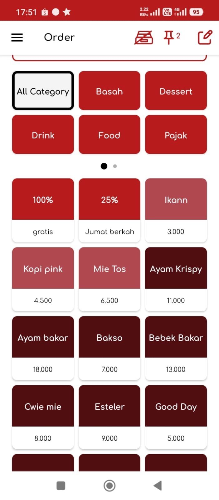
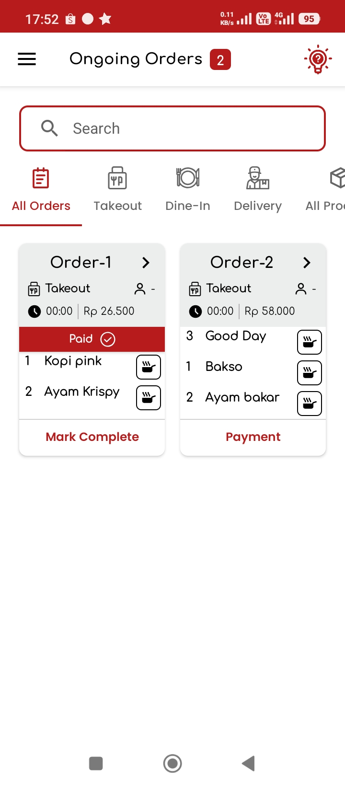
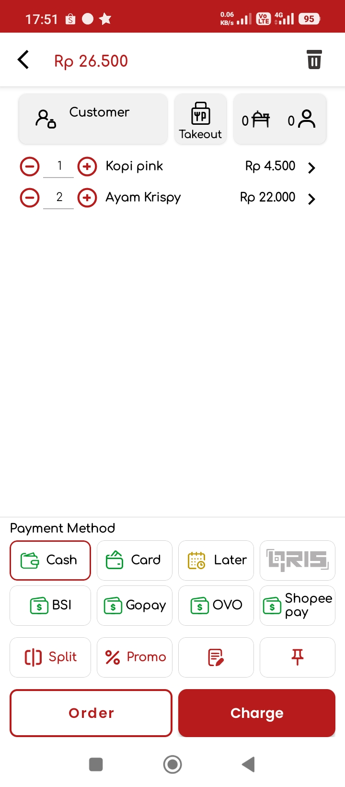
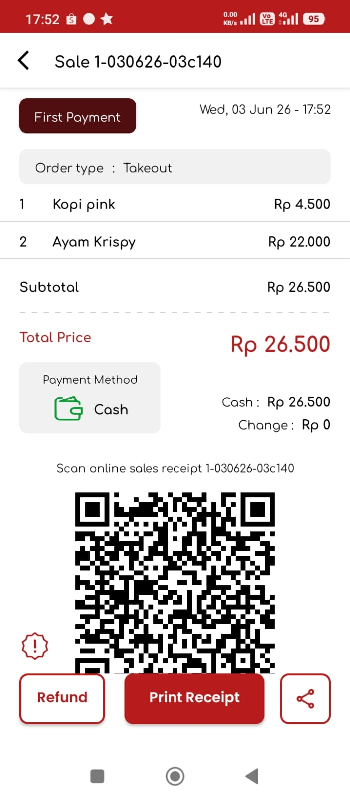
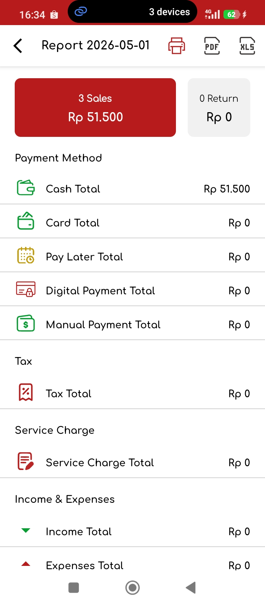

Goe
POS
Aplikasi kasir.
Dirancang khusus
Gak ribet
Mudah digunakan,
siap pakai
Anti lemot
Cepat di semua
perangkat
99% anti error
Transaksi aman,
data terlindungi
Anti ngelag
Stabil dan lancar,
tanpa gangguan
Khusus untuk bisnis
restoran, cafe, rumah makan dan kuliner.
restoran, cafe, rumah makan dan kuliner.
Dukungan Chat Langsung
Support langsung live
chating via aplikasi

Satu aplikasi untuk kasir, order, dapur, laporan, dan operasional kuliner

Waiter mencatat pesanan, dapur menyiapkan menu, dan kasir memproses pembayaran dalam satu alur operasional yang rapi
Internet putus? Transaksi tetap jalan
Tetap jualan meski internet bermasalah. Transaksi tersimpan saat offline dan otomatis sinkron saat online kembali
Transaksi aman, data terlindungi
GoePOS menjaga transaksi tetap tercatat asli, tidak mudah dihapus sembarangan, dan performa aplikasi terus dipantau agar kendala bisa cepat diperbaiki

Dibuat untuk bisnis kuliner
Cocok untuk outlet kecil sampai usaha yang timnya mulai ramai.
Setiap tempat makan punya ritme sendiri. GoePOS membantu alurnya tetap enak diikuti, dari pelanggan pesan, pesanan masuk ke dapur, sampai laporan tutup kasir.
Restoran
Order meja, kasir, dapur, dan laporan harian tersusun lebih jelas.
Kafe
Cocok untuk dine-in, takeaway, dan antrean yang harus dilayani cepat.
Food truck
Tetap bisa jualan di lokasi yang koneksinya belum tentu stabil.
Cepat
Input order dibuat cepat, termasuk dukungan keyboard fisik 3 digit untuk outlet yang transaksinya padat.
Stabil
Saat internet lambat atau putus, kasir tetap bisa berjalan dan sinkron lagi tanpa setup manual.
Fleksibel
Dari pesanan sederhana sampai bagi tagihan, tahan transaksi, dan reservasi, alurnya bisa mengikuti cara kerja outlet.
Alur kerja restoran
Pesanan masuk, dapur bergerak, kasir beres, laporan siap dicek.
Pelayan input pesanan
Pesanan dari HP atau tablet langsung masuk ke sistem. Pelayan tidak perlu bolak-balik bawa catatan kertas.
Kasir proses pembayaran
Kasir menghitung transaksi, membagi tagihan bila perlu, mencetak struk, dan mencatat pengeluaran outlet.
Dapur langsung tahu
Pesanan bisa tampil di KDS atau dicetak ke printer dapur, bar, maupun kasir sesuai kebutuhan outlet.
Laporan siap dicek
Pemilik bisa melihat ringkasan penjualan, mengunduh laporan PDF, atau mencetaknya untuk arsip.
Fitur utama
Yang dibutuhkan outlet ada, tapi tetap mudah dipakai.
Fitur GoePOS dirancang untuk pekerjaan harian di outlet, bukan sekadar daftar menu di aplikasi. Tim bisa fokus melayani, sementara data tetap tercatat rapi.
Kasir online dan offline
Transaksi tetap bisa dicatat saat internet tidak stabil, lalu sinkron lagi tanpa pengaturan manual.
Pesanan lewat HP dan POS pelayan
Pelayan bisa input order dari HP atau tablet Android, lalu pesanan langsung terkirim ke kasir dan dapur.
Kitchen Display System
Dapur lebih mudah membaca pesanan, mengatur urutan masak, dan mengurangi order yang terlewat.
Stok produk dan bahan baku
Pantau stok produk dan bahan baku supaya belanja dan produksi lebih terukur.
Pengeluaran kasir
Catat belanja kecil, kebutuhan operasional, atau pengeluaran harian dari kas outlet.
Akses sesuai peran
Pemilik, kasir, pelayan, dan tim dapur bisa mendapat akses sesuai tugasnya masing-masing.
Transaksi cepat
Alur kasir dibuat praktis, termasuk dukungan keyboard fisik 3 digit untuk input yang lebih cepat.
Laporan PDF dan cetak
Laporan bisa dipantau online, diunduh sebagai PDF atau XLS, dan dicetak langsung dari printer kasir.
Sinkronisasi cloud
Data outlet tersinkron melalui sistem cloud dengan data center standar tier 1.
Struk lebih aman
Riwayat struk dibuat lebih aman sehingga transaksi tidak mudah hilang atau dihapus sembarangan.
Bagi tagihan, tahan transaksi, dan reservasi
Berguna saat pelanggan ingin berbagi tagihan, menahan transaksi, atau memesan lebih dulu.
Printer dapur, kasir, dan bar
Cetak order dan struk ke titik yang tepat agar alur kerja tiap bagian lebih lancar.
Tampilan aplikasi
Lihat beberapa alur yang dipakai tim setiap hari.
Dari memilih produk, mengelola order berjalan, memproses pembayaran, sampai membuka struk, semua dibuat dekat dengan ritme kerja outlet.

Produk dan kategori
Kasir bisa memilih kategori dan produk dengan cepat, lengkap dengan harga yang langsung siap masuk ke order.

Order berjalan
Tim bisa memantau pesanan yang masih aktif, melihat status pembayaran, dan menandai order selesai tanpa kehilangan konteks.

Keranjang dan pembayaran
Item order, tipe layanan, pelanggan, dan metode pembayaran berada dalam satu layar sehingga kasir bisa bekerja lebih cepat.

Struk penjualan
Detail pembayaran, item transaksi, QR struk online, refund, dan cetak struk tersedia jelas setelah transaksi selesai.
Online/offline
Internet tidak selalu mulus. Kasir tetap harus siap.
Di jam sibuk, gangguan koneksi bisa bikin panik. Dengan mode offline dan sync otomatis, transaksi tetap dicatat dulu, lalu data menyusul saat internet kembali normal.
- Mode offline tanpa pengaturan rumit
- Sinkronisasi tanpa setup manual saat koneksi kembali
- Cocok untuk outlet dengan jaringan yang sering berubah
Kasir outlet
Mode offline
Cloud GoePOS
Auto sync
Pemilik
Laporan online

Ringkasan penjualan
PDF, XLS, dan Cetak
Monitoring bisnis
Buka laporan tanpa harus selalu datang ke outlet.
Penjualan, stok, dan pengeluaran kasir lebih mudah dicek. Laporan bisa diunduh dalam format PDF atau XLS, lalu dicetak saat dibutuhkan.
Penjualan harian
Produk dan stok
Pengeluaran kasir
Cetak laporan
Harga sederhana
Tidak ada iklan, tidak ada biaya fitur tambahan yang bikin kaget.
GoePOS memakai pembelian dalam aplikasi. Level penggunaan bisa dipilih dari aplikasi, sementara fitur utamanya tetap dibuat terbuka untuk kebutuhan outlet.
Mulai dari
Unduh gratis
Coba aplikasinya dulu. Saat transaksi, produk, atau jumlah staf bertambah, level penggunaan bisa disesuaikan dari menu aplikasi.
- Tanpa iklan dan tanpa biaya fitur tambahan
- Level menyesuaikan transaksi, produk, dan staf
- Pembayaran melalui Google Play
FAQ
Pertanyaan yang sering ditanyakan.
Apa itu GoePOS?
GoePOS adalah aplikasi kasir untuk restoran, kafe, dan food truck. Di dalamnya ada kasir online/offline, POS pelayan, KDS, stok, pengeluaran, laporan, dan akses untuk banyak pengguna.
Apakah GoePOS bisa digunakan saat internet mati?
Bisa. Kasir tetap dapat mencatat transaksi dalam mode offline dan menyinkronkan data kembali saat internet tersedia.
Siapa saja yang bisa memakai GoePOS?
GoePOS mendukung akses untuk pemilik, kasir, pelayan, dan tim dapur. Setiap orang bisa fokus ke tugasnya tanpa perlu membuka seluruh bagian sistem.
Bagaimana cara berlangganan?
Download aplikasi GoePOS di Google Play, lalu pilih level langganan dari menu pengaturan aplikasi sesuai kebutuhan bisnis.
Siap coba?